class: center, middle 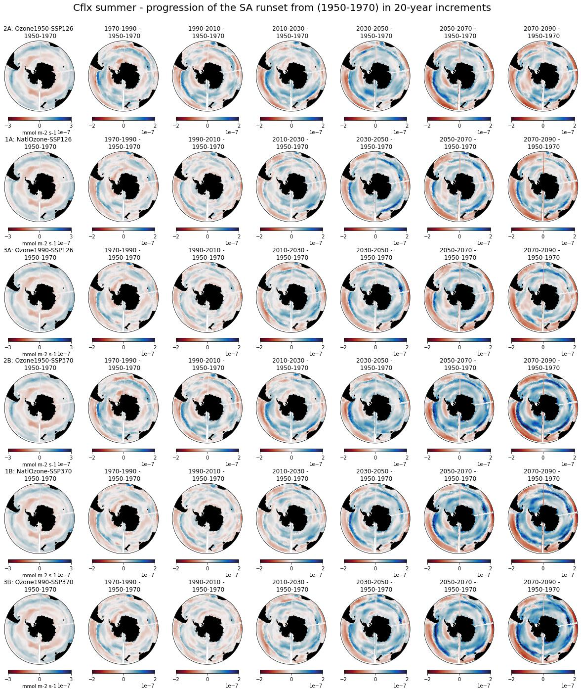<br/> --- class: center, middle 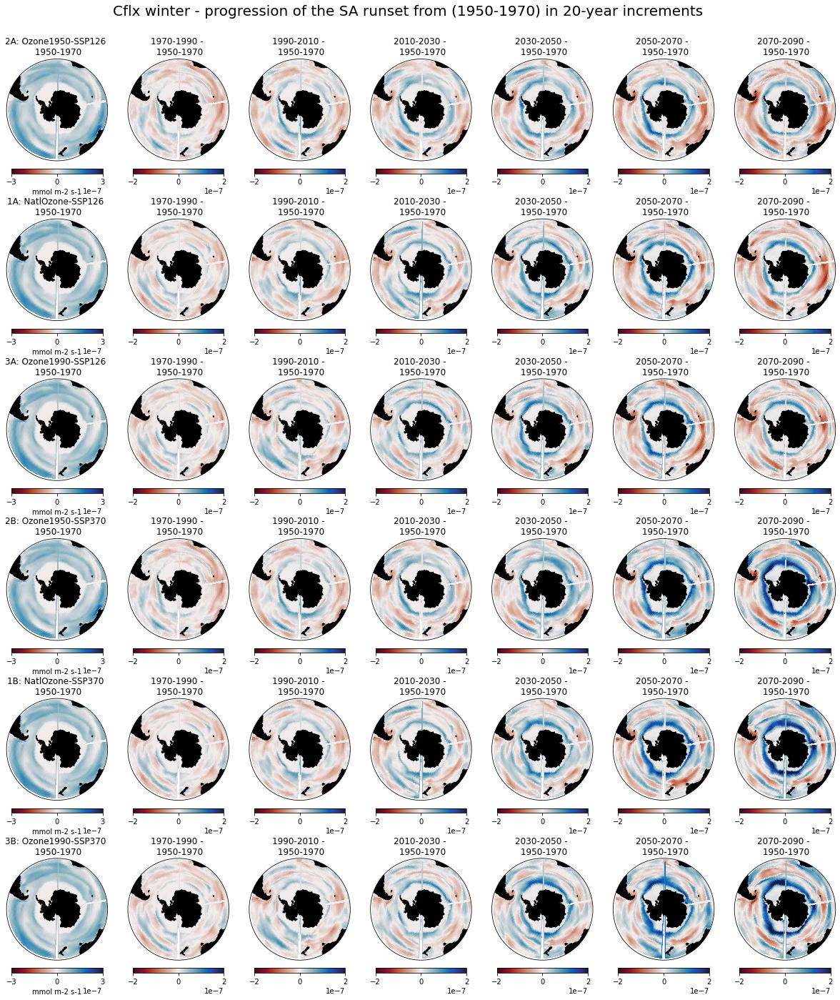<br/> --- class: center, middle 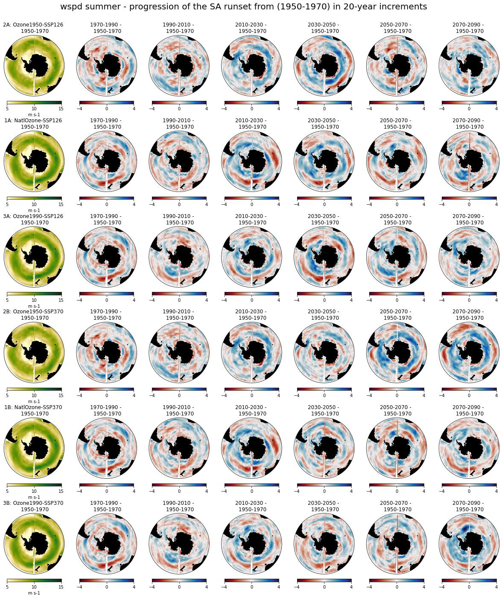<br/> --- class: center, middle 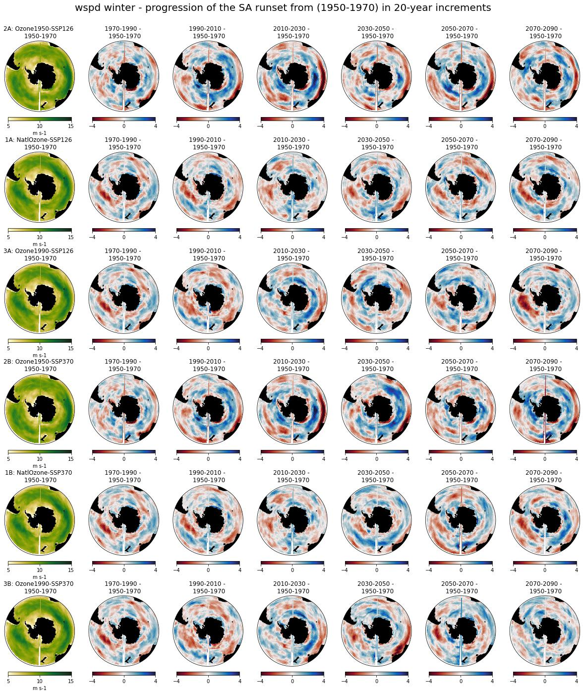<br/> --- class: center, middle 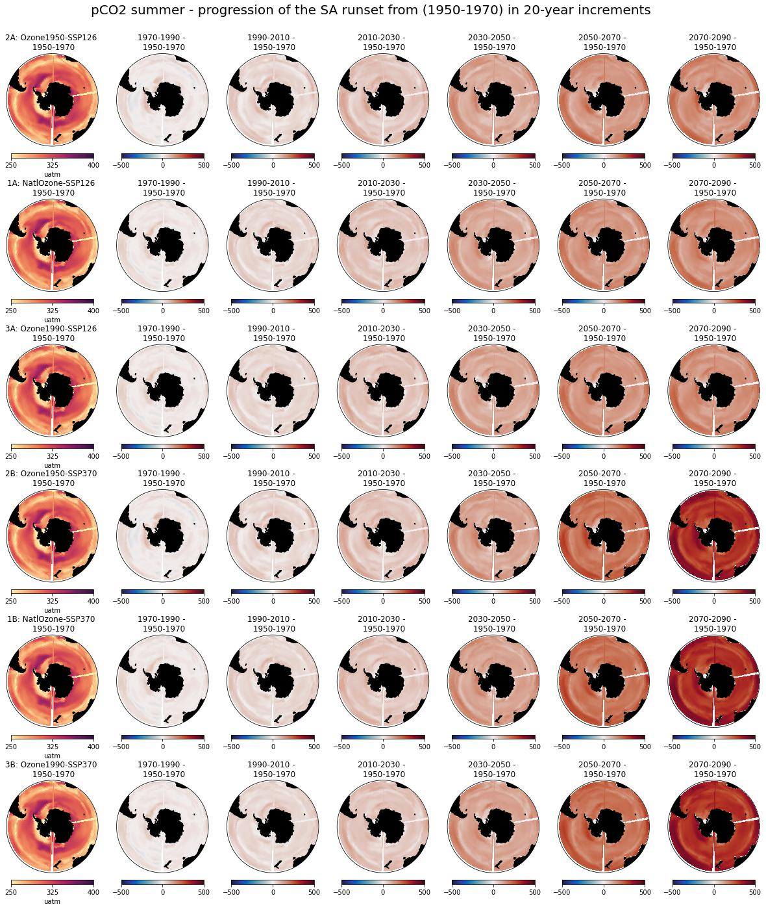<br/> --- class: center, middle 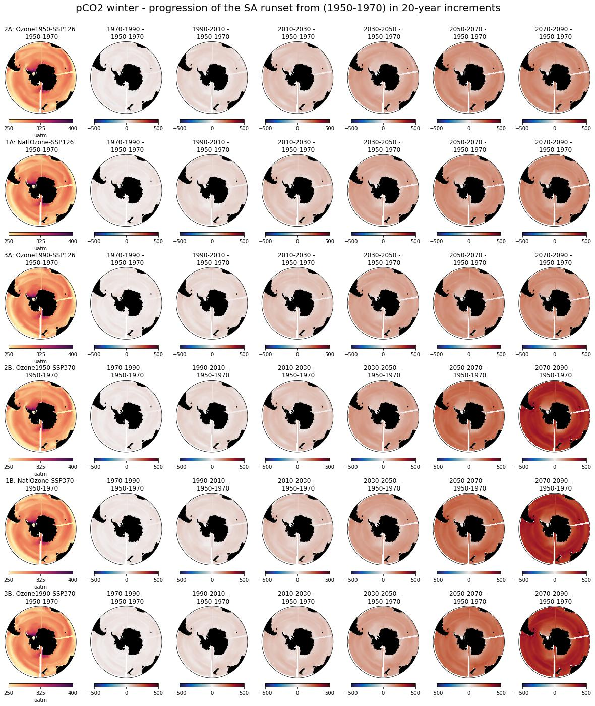<br/> --- class: center, middle 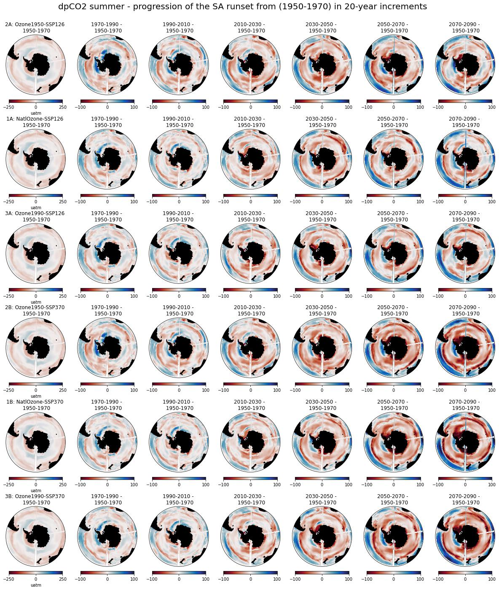<br/> --- class: center, middle 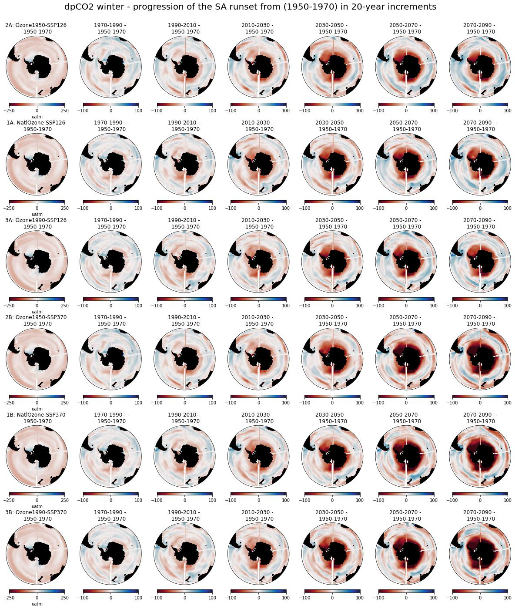<br/> --- class: center, middle 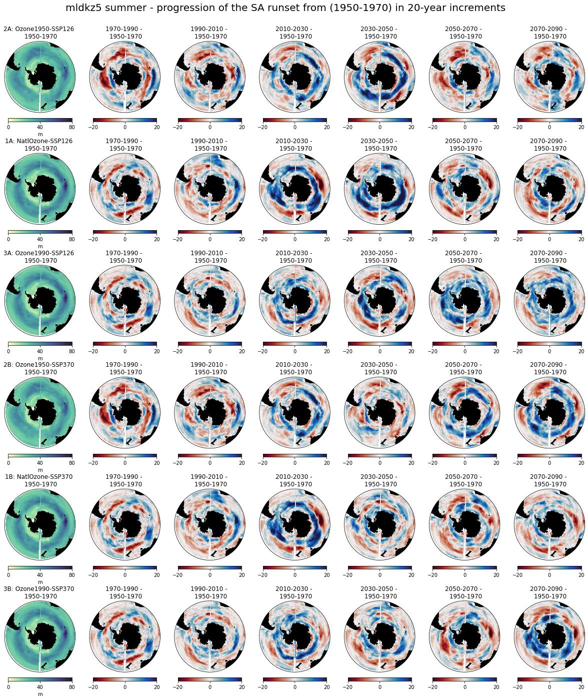<br/> --- class: center, middle 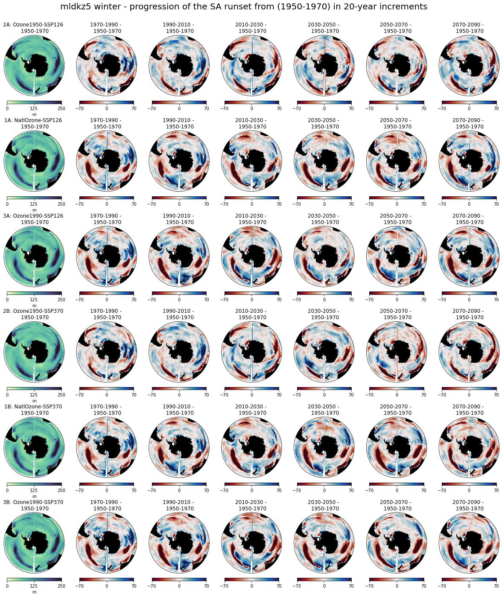<br/> --- class: center, middle 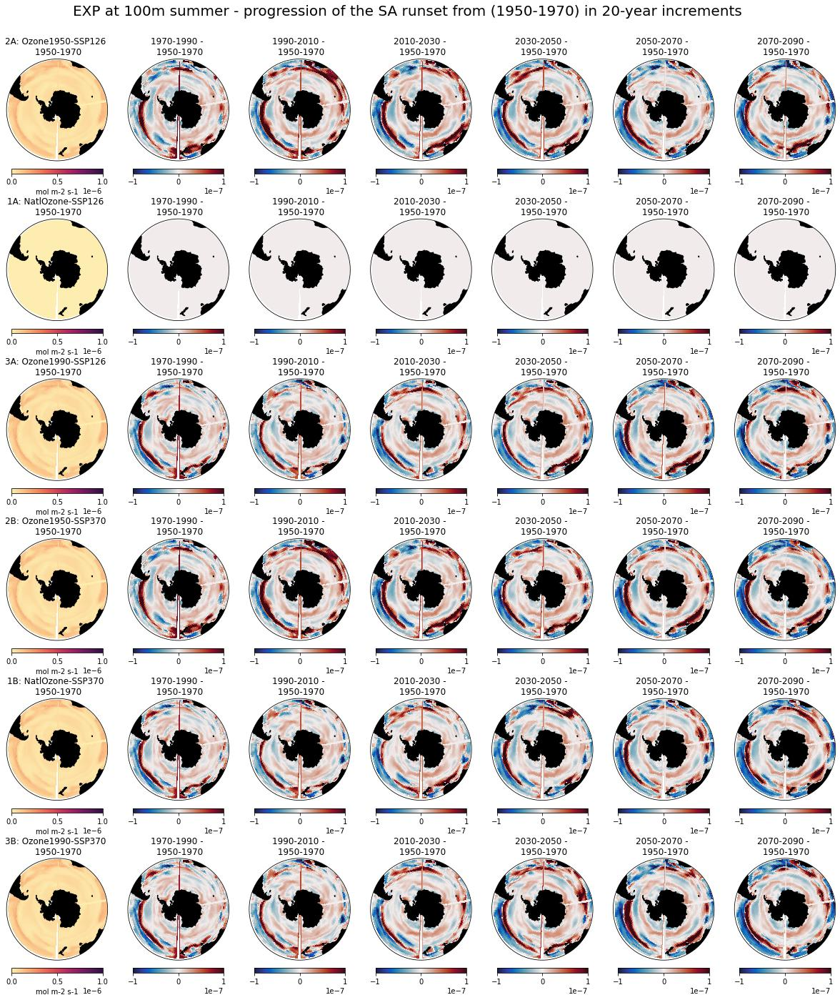<br/> --- class: center, middle 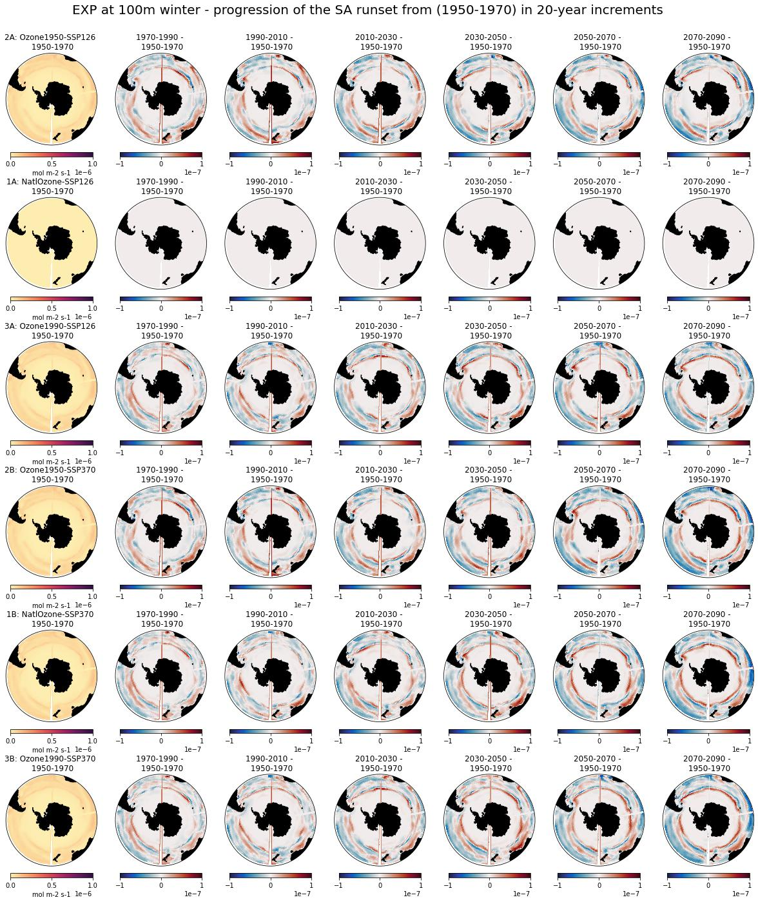<br/>